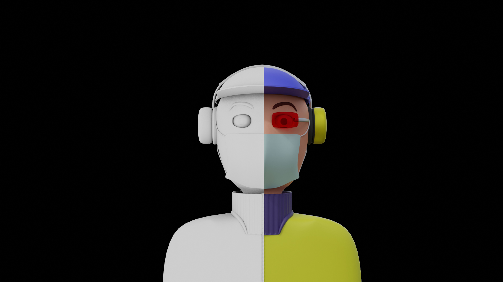
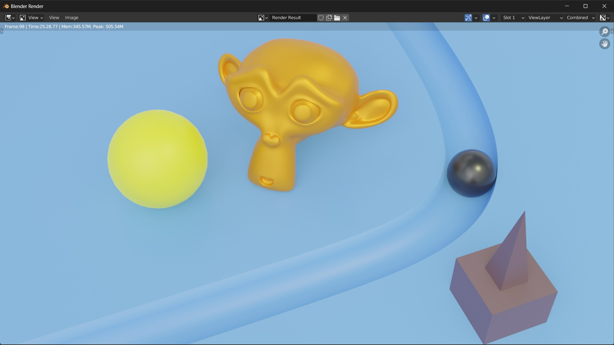
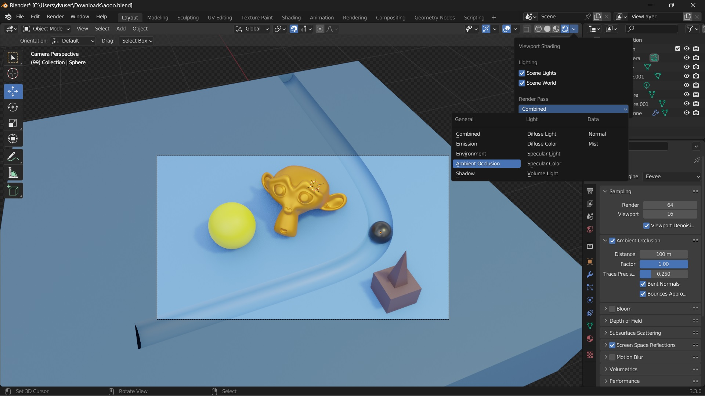
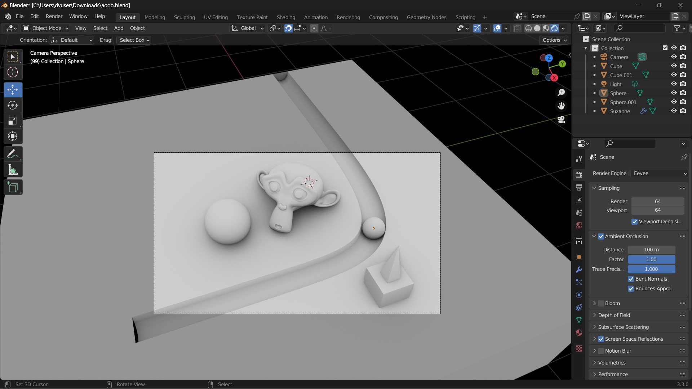
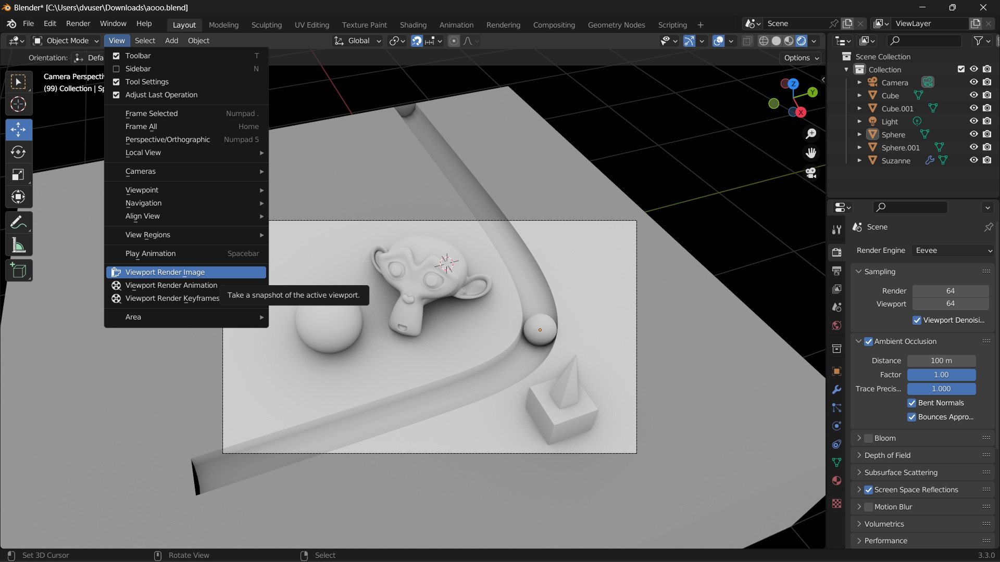
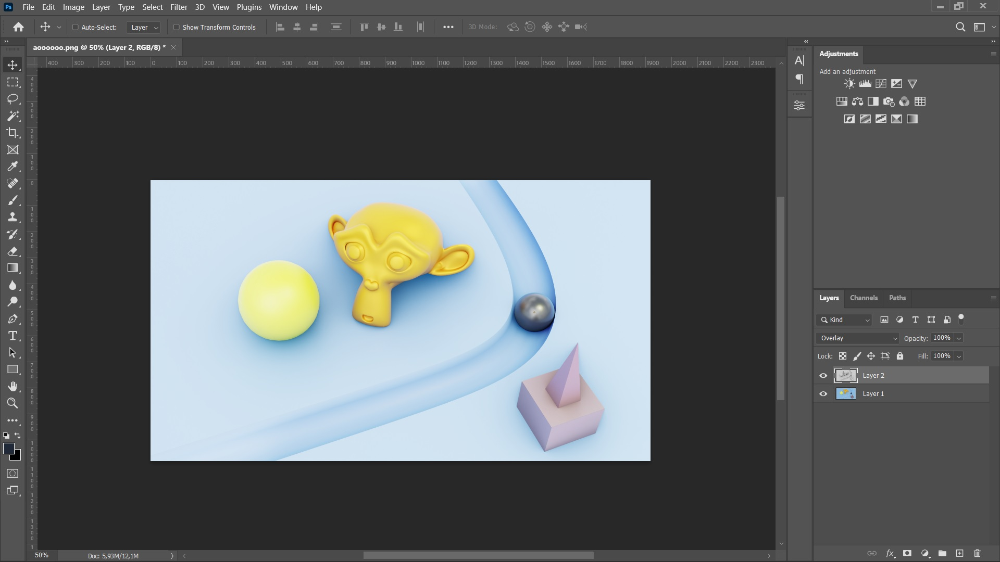
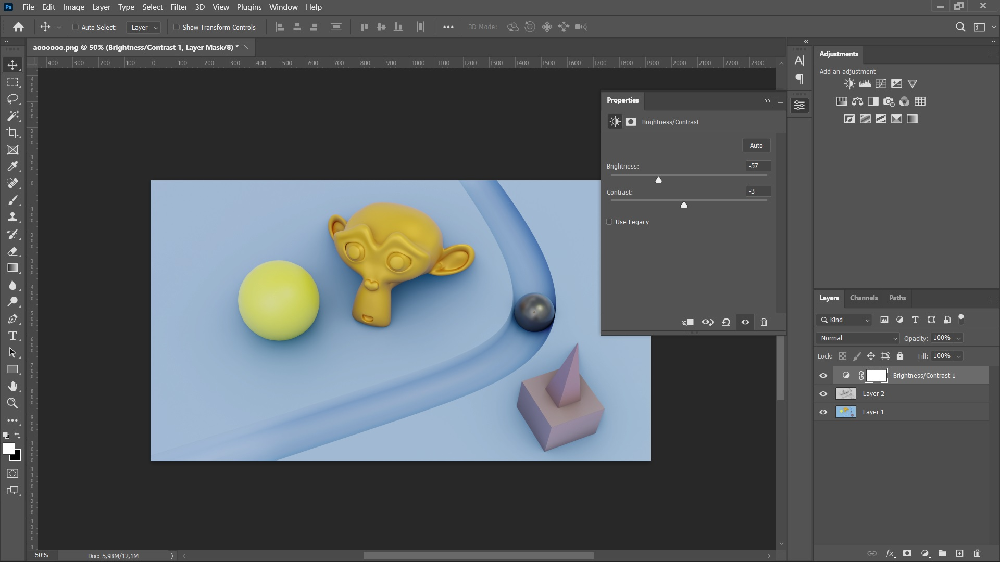

How To Get Fast Ambient Occlusion On Your Cycles With Post-Pro Method


AO Off Vs AO On
Ambient occlusion is graphic feature that make shadow more visible and bold. This feature available on eevee engine by go to render settings and you'll find ambient occlusion. But Getting ambient occlusion in cycles engine is different, you must add ambient occlusion node on shader editor. And the bitter fact is getting ambient occlusion on your cycles engine will slowing your render time.
So why dont we separate the render result and the ambient occlusion render result? Here is the thing. In eevee engine you can only showing the ambient occlusion then you can render it.
AO Maps
After separating the render result and AO maps you can combine those 2 images with 3rd software like Adobe Photoshop even Figma. Here the steps:
1. Render Your Main Scene
Main Scene Render Result
Firstly render your main scene with cycles engine. If your scene is complex, my receomendation is save your image with jpeg format to make smaller file size.
2. Switch To Eevee Engine
Turn On AO Only
Go to eevee engine and turn on render viewport, then set the render pass to Ambient Occlusion
3. Setting Up The Ambient Occlusion
Adjusting AO
Setting up the ambient occlusion according to your taste. If you want better result, set the trace precision to 1000
4. Render The AO Maps
Render AO
Render the viewport view by going to view > viewport render image
4. Combine Those 2 images
Combine 2 Image Using Photoshop
After render the main scene and the AO maps, now time to combine it. Im use adobe photoshop to combine those image. Put the AO maps in top and change the blending mode to overlay
5. Little Adjust
Brigtness Adjust
Because of the overbright image, we must tune the brigtness by using Brightnes/Contrast Adjustment filter. And you done getting ambient occlusion in cheap method.
The Difference
The Difference
You can actually using these method for animation too, but its to complicated because of my computer didnt afford that.